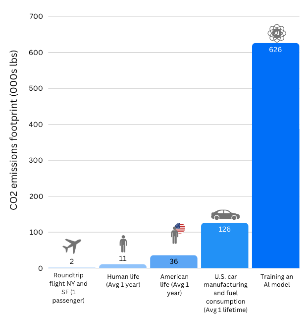

Dangers of AI#
Audio summary made by NotebookLM
There are many dangers of AI and sometimes its hard to keep oversight and really understand where to focus on. This page intends to walk you through some of the main challenges of AI and important things to consider.
The video below gives a great overview of the most important current dangers of AI:
Danger 1: Environmental Impact#
The environmental impact of AI is significant. Research from 2019 shows that training a single AI model can generate 626,000 lbs (284 metric tons) of CO2. The same as the lifetime emissions of five cars. Furthermore, given the rapid adoption and integration of AI it is projected that by 2027 AI could consume the energy equivalent of a country like the Netherlands.
{kind=link}
To better understand AI’s true impact, we need to examine three key stages: training, deployment (inference), and retraining/updates. While the training phase is initially very energy-intensive, the ongoing use during the deployment and inference phase can surpass the environmental impact of training due to its continuous operation. For example, Google reported that 60% of its AI-related electricity comes from running models, while only 40% is from training. By recognizing the impact of each stage allows for a clearer picture of AI’s long-term energy demands and environmental consequences.
Training a LLM is an intensive process that transforms raw text data into a functioning AI system. It begins with data preparation, where vast amounts of text—ranging from books and articles to internet content—are collected, cleaned, and formatted. This step removes duplicates, filters out low-quality information, and tokenizes text into numerical representations that the model can process. Even before training starts, data preprocessing alone requires significant computational resources to organize and structure terabytes of information.
Once the dataset is ready, the core training phase begins. The model learns by predicting words in sentences, adjusting billions of internal parameters through repeated computations. This is done using high-performance hardware like GPUs and TPUs, which run nonstop for weeks or months. Each training step involves forward propagation (where the model makes a prediction), comparing it to the correct answer, and backpropagation (where the model updates its parameters to improve accuracy as discussed in LLMs Explained). This cycle is repeated across the entire dataset, refining the model’s ability to generate human-like text.
The energy cost of this process is immense. The sheer volume of calculations demands continuous electricity consumption, and the hardware generates heat, requiring cooling systems that add to power usage. Data centers hosting these operations pull energy from the grid, often relying on fossil fuels, resulting in substantial carbon emissions. Beyond electricity, manufacturing GPUs, TPUs, and other specialized chips requires mining rare minerals, contributing to environmental degradation.
Efforts to mitigate this impact focus on optimizing model architectures to reduce computational overhead, using energy-efficient chips, and shifting data centers to renewable energy sources. However, as models grow larger and training datasets expand, the fundamental challenge remains: training AI at this scale is resource-intensive with long-term environmental consequences.
Once a large language model is trained, it moves to the deployment phase, where it is made accessible to users through applications, chatbots, and various AI-powered tools. Unlike training, which happens once per model version, inference (the process of generating responses) occurs every time someone interacts with the system. Each query requires the model to process input text, run complex calculations through its neural network, and generate a response in real-time. While a single inference request consumes less energy than training, the cumulative cost is enormous due to the sheer volume of interactions happening worldwide every second.
Inference is computationally expensive because LLMs are designed to predict text by running billions of parameters for every response. This requires high-performance servers operating continuously, housed in data centers that consume large amounts of electricity. These servers also generate heat, necessitating extensive cooling systems that further increase energy demands. Unlike traditional software, where execution is lightweight and static, AI-driven applications require constant, power-intensive computations for every user interaction.
The environmental impact of deployment is long-term and persistent. Data centers must run 24/7, drawing power from the grid and contributing to ongoing carbon emissions. Hardware degradation over time leads to e-waste as older servers and chips become obsolete and are replaced. To reduce energy costs, companies are employing efficiency strategies such as quantization (reducing precision to speed up processing) and model distillation (creating smaller versions of large models), as well as moving AI processing tasks to specialized hardware optimized for inference.
Despite these optimizations, the rapid growth of AI adoption continues to drive up energy consumption. Sustainable deployment depends on redesigning AI infrastructure to be more efficient, increasing reliance on renewable energy, and developing new techniques to reduce the computational footprint of large-scale inference. Without these changes, the environmental cost of AI deployment will only escalate as more people integrate these models into daily life.
Once deployed, an LLM requires continuous updates and retraining to stay accurate, adapt to new information, and improve performance. This process, often referred to as fine-tuning or retraining, ensures the model remains useful as language evolves, factual knowledge changes, and user needs shift. Unlike the initial training phase, which is performed once on a massive dataset, retraining happens periodically and can range from small updates to full-scale model refreshes.
Retraining involves feeding new or corrected data into the model and re-adjusting its parameters. This can be done in several ways: fine-tuning on smaller, domain-specific datasets, reinforcement learning based on user feedback, or large-scale re-training from scratch using expanded datasets. Each of these approaches demands additional computational power, as the model must reprocess information, adjust billions of internal weights, and validate improvements through extensive testing.
The energy impact of retraining is significant because it repeats many of the high-cost processes from the initial training phase. Running computations across massive datasets requires extensive server power, drawing electricity and producing heat, which in turn increases cooling demands. Frequent updates add to the ongoing carbon footprint of AI, as every new model version requires another round of energy-intensive processing. Additionally, storing and managing updated models across global infrastructure further compounds resource consumption.
To reduce the environmental impact, researchers are exploring techniques like continual learning, where models update in smaller, incremental steps rather than undergoing full retraining cycles. Other strategies include more energy-efficient fine-tuning methods, such as parameter-efficient tuning (PET), which modifies only small portions of the model instead of recalibrating the entire network. Despite these optimizations, the need for regular updates ensures that AI remains an ongoing energy burden, making sustainable retraining strategies a critical focus for the future.
1. What can professors do to reduce the energy use of AI in their work?
There’s no single answer. AI’s environmental impact isn’t a black-and-white issue, and there’s no universal solution that works for everyone. It comes down to priorities.
As a teacher, you need to decide how valuable AI is for your work and weigh that against the importance of reducing your environmental footprint. Is the benefit AI brings to your teaching worth its energy cost? Or are there areas where you can cut back without losing what makes it useful?
That balance will look different for everyone. But what’s clear is that AI does consume a significant amount of energy. Every prompt adds up. The key is intentional use rather than mindless reliance.
Here are some ways you can reduce your impact without giving up AI completely:
Share AI-Generated Materials – If you’ve used AI to create lesson plans, quizzes, or summaries, share them with colleagues. This avoids multiple teachers running the same energy-heavy AI processes for identical tasks.
Teach About AI’s Energy Use – Include discussions in class about the environmental cost of AI. This builds awareness among students and encourages responsible usage.
Use Simpler Alternatives – Not every task needs a massive LLM. For basic text generation or summarization, use smaller, less energy-intensive models instead of high-powered ones. For example you can use the following open source ranking which compares LLMs on energy effiency. However, obtaining information about non-open-source models remains difficult.
Ultimately, AI is a tool, not a requirement. How much you use it, and how efficiently, is a decision only you can make. The goal isn’t to eliminate AI but to use it thoughtfully, with full awareness of both its benefits and its costs.
2. Why Is AI Energy Consumption So Hard to Measure?
AI’s energy use is difficult to track because it runs inside massive data centers alongside many other processes. Energy use is usually measured for the entire data center, not for individual AI models, making it hard to isolate AI’s exact footprint. Different companies also report energy usage in different ways, meaning there’s no clear way to compare numbers.
Because of this, AI’s true energy impact remains unclear. Until companies are more transparent and follow consistent reporting standards, we can only rely on rough estimates.
Danger 2: Copyright Infringement#
LLMs are trained on vast amounts of publicly available text, much of which is copyrighted material. AI does not memorize and reproduce exact passages verbatim (except in rare cases), but it does extract patterns, styles, and ideas from its training data. This creates a gray area in copyright law as direct copying is illegal, learning from copyrighted material to generate new content has historically been allowed in areas like human learning and artistic inspiration. However, AI operates on a scale that challenges existing legal frameworks.
Companies developing AI argue that training on copyrighted text falls under “fair use,” a legal doctrine allowing limited use of protected content for purposes like education, research, and transformative work. Critics, including authors, journalists, and publishers, counter that AI models benefit commercially from their work without permission or compensation. Lawsuits have been filed by artists, writers, and organizations claiming that AI-generated outputs derived from their copyrighted content constitute unauthorized reproduction.
Governments and courts are now grappling with how to regulate AI while balancing innovation with intellectual property rights. Some proposals include requiring AI companies to obtain licenses for copyrighted material, compensating original creators, or restricting AI training datasets to public domain and open-license sources. The outcome of these legal battles will shape the future of AI development and determine whether large-scale model training must adhere to stricter copyright protections.
As AI systems become more integrated into education and research, they raise significant copyright concerns. Understanding these issues is crucial for responsible use of AI. Below are answers to key questions to help you navigate AI’s copyright challenges.
1. Who Owns AI-Generated Work?
Who Owns the Work?
AI Developer? Usually not, unless their terms specify otherwise.
Student? Only if they contribute enough originality through detailed prompts, edits, or artistic decisions.
No One? If the AI generates content with minimal human involvement, there’s likely no valid copyright claim.
What Counts as Human Input?
Just typing a short prompt isn’t enough to claim copyright.
Under EU law the making of edits, refining outputs, and adding creative choices that reflect human expression could qualify the work for copyright. Keep in mind that copyright law is, to a large extent, a matter of national law, so specifics might differ between countries within the EU.
TU Delfts policy on copyright
Check out the TU Delft Copyrighting Support Page for more information.
Danger 3: Bias#
AI tools are powerful, but they can also reflect or amplify unfair patterns from the data they learn from. To use AI responsibly in teaching and research, it’s important to understand the fundamentals. Bias enters AI systems primarily through three key areas: the training data, the algorithms used to process it, and the way humans interact with and reinforce the model’s outputs.
Large language models are trained on vast amounts of text collected from books, articles, websites, and social media. These sources contain existing societal biases about race, gender, culture, and more because they are written by humans with their own perspectives and prejudices. If certain viewpoints dominate the dataset while others are underrepresented, the model learns and perpetuates those imbalances. For example, if historical texts portray leadership as predominantly male, the model may generate biased assumptions about gender roles.
Even if the training data were perfectly balanced (which is virtually impossible), the way AI processes information can introduce further bias. The model assigns weight to different words and concepts based on statistical patterns, but it does not understand fairness or ethical considerations. Certain ideas may be overemphasized, and others may be filtered out in ways that unintentionally reinforce stereotypes. Additionally, design choices such as how a model prioritizes diversity over accuracy can skew outputs in unintended ways. For example, in an effort to promote diversity, Google’s AI image generator produced historically inaccurate images, such as depicting racially diverse Nazi soldiers and reimagining the Founding Fathers with varied ethnicities. These outputs led to public backlash, highlighting how design decisions intended to enhance inclusivity can inadvertently introduce new forms of bias and misrepresentation.
Many AI models undergo fine-tuning through reinforcement learning, where human reviewers help shape responses by ranking preferred outputs. If these reviewers have unconscious biases, they may inadvertently guide the model toward responses that align with their own perspectives. Moreover, real-world user interactions can reinforce biases. For example, if users mostly interact with content that leans in one direction or has specific characteristics, the model might begin to favor these patterns over others. This happens because the AI learns from past interactions, so if certain topics or types of content are clicked on more, it “learns” that these responses are preferred, making it more likely to produce similar outputs in the future.
1. What are the most common types of bias in Al?
Name |
Description |
Example |
|---|---|---|
Data Bias |
AI models learn from datasets that may reflect societal prejudices or exclude certain groups. |
Facial recognition trained on light-skinned individuals performs poorly on darker-skinned individuals. |
Representation Bias |
Underrepresentation of certain demographics or viewpoints in training data skews AI outputs. |
AI trained on Western sources may prioritize Western perspectives over others. |
Confirmation Bias |
AI reinforces user biases by serving content aligning with past interactions. |
Search engines creating echo chambers by showing users only what aligns with their beliefs. |
Labeling Bias |
Subjective or culturally influenced judgments by human annotators may introduce biases. |
If annotators categorize outputs as “undesirable,” AI internalizes these biases. |
Automation Bias |
Users may trust AI-generated content excessively, assuming it is unbiased. |
Students learning incorrect information from AI-generated educational resources. |
2. What practical steps can professors take to reduce Al bias?
Teaching AI literacy is essential for helping students recognize and challenge biased outputs. Professors can encourage this by having students compare AI-generated responses with human perspectives, analyze how AI misinterprets nuanced topics, or explore ethical implications of AI decision-making. Additionally, fostering transparency in AI use is crucial. Students should be required to document how AI influenced their work, noting any biases they observe in the system’s outputs. This practice promotes critical engagement with AI rather than passive reliance on its responses.
Image Bias Explorer
Explore how text-to-image models represent different professions here and see the biases these may contain.
Dangers specific to Higher-Level Education#
As some students will be more AI-literate, giving them an unfair advantage compared to others.
Potential solution: Provide theory-based summaries to all students. While this may seem counterintuitive at first, it ensures equal access to foundational knowledge. This also allows you to delve deeper into theory during lessons as students will all share the same foundation.
Students may use AI to complete assignments quickly, potentially limiting the learning process.
Potential solution: Design AI-resistant assignments by focusing on tasks where AI performs poorly, such as specific use cases it isn’t well-trained on, or by requiring students to personalize AI outputs to their own lives. This approach encourages deeper understanding. For guidance on what AI is bad at refer back to LLMs Explained. Other practical ideas include:
Making assignments more engaging and clear to motivate students to participate.
Breaking work into smaller, iterative tasks (e.g., multiple deadlines instead of one large one) to make it less daunting.
Encouraging collaborative group work to foster problem-solving and teamwork.
Students may no longer see the value in going to class.
Potential solution: Adapt and innovate lecture formats to make attending class worthwhile. For example, create more interactive lessons where students collaborate and engage with the material actively. Refer to the Lesson Planning Module to see how to do this.